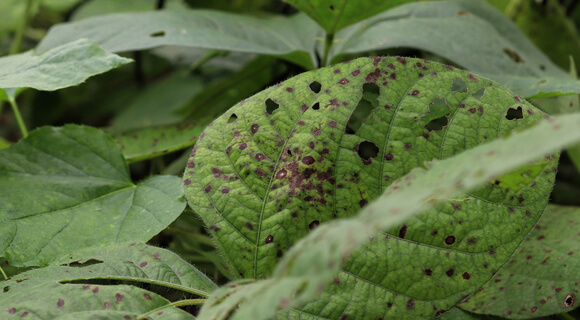

Plant Disease Prevention Guidelines

Indoor Plants
- Quarantine New Plants: Isolate new plants before introducing them to your indoor collection. This helps prevent the spread of potential diseases.
- Air Circulation: Ensure good air circulation around indoor plants to reduce humidity and minimize the risk of fungal diseases.
- Monitor Moisture Levels: Avoid overwatering indoor plants, as excess moisture can create conditions favorable for diseases.
- Clean Tools: Regularly clean and disinfect gardening tools to prevent the transfer of pathogens between plants.
Outdoor Plants
- Choose Resistant Varieties: Select plant varieties that are resistant to common diseases in your region.
- Proper Plant Spacing: Avoid overcrowding plants to promote air circulation and reduce the likelihood of diseases spreading.
- Water at the Base: Water the soil around the base of outdoor plants to keep foliage dry and discourage diseases.
- Remove Infected Plant Material: Promptly remove and dispose of any infected plant material to prevent the spread of diseases.